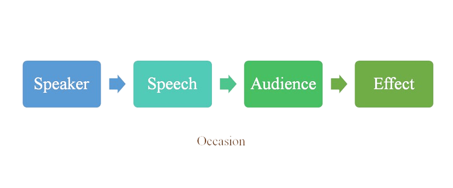
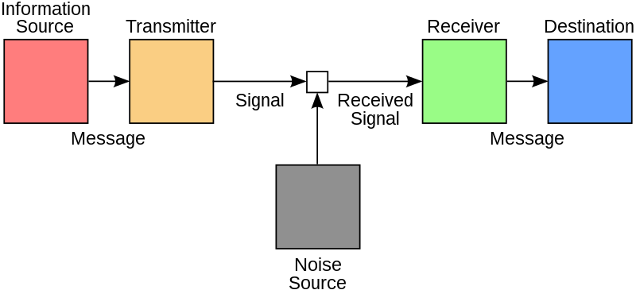
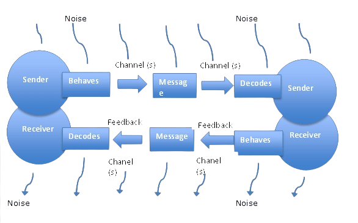

MODELS OF COMMUNICATION
1. Aristotle’s model of communication
The oldest communication model that dates back to 300 BC, Aristotle’s model was designed to examine how to become a better and more persuasive communicator. Aristotle’s model of communication primarily focuses on the sender (public speaker, professor, etc.) who passes on their message to the receiver (the audience). The sender is also the only active member in this model, whereas the audience is passive. This makes Aristotle’s communication model a foolproof way to excel in public speaking, seminars, and lectures.

2. Lasswell's Model of Communication
Lasswell’s communication model views communication as the transmission of a message with the effect as the result. The effect in this case is the measurable and obvious change in the receiver of the message that is caused by the elements of communication. If any of the elements change, the effect also changes.

3. Shannon-Weaver Model of Communication
Known as the mother of all communication models, the Shannon-Weaver model (1949) depicts communication as a linear or one-way process consisting of five elements: a source (producer of message); a transmitter (encoder of message into signals); a channel (signals adapted for transmission); a receiver (decoder of message from the signal); and a destination. This model, however, has been criticized for missing one essential element in the communication process: feedback. Without feedback, the speaker will not know whether the receiver understands the message or not.

4. Transaction Model of Communication
Unlike the Shannon-Weaver Model, which is a one-way process, the Transaction Model is a two- way process with the inclusion of feedback as one element. This model is more interactive. There is a collaborative exchange of messages between communicators with the aim of understanding each other. It also shows that a barrier, such as noise, may interfere with the flow of communication.

5. Schramm Model of Communication
Schramm's model of communication includes a feedback loop and the processes of encoding, decoding, and interpretation. The success of communication also depends on the fields of experience of the participants. A field of experience includes past life experiences as well as attitudes and beliefs.